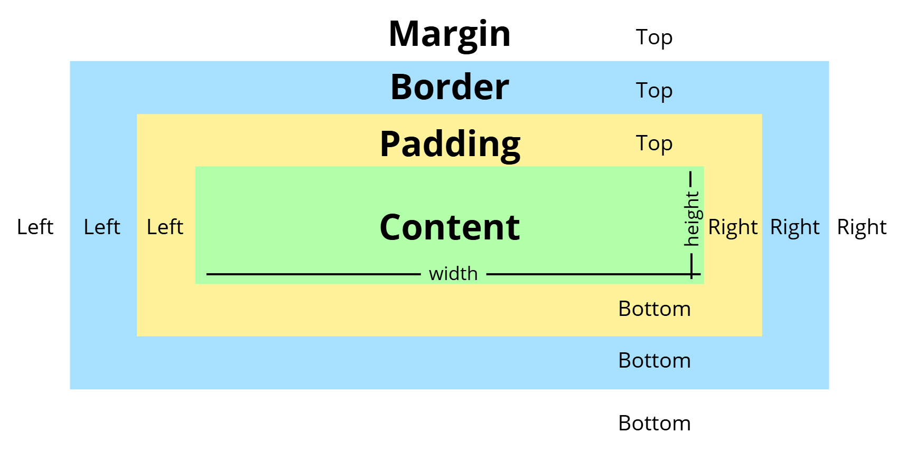
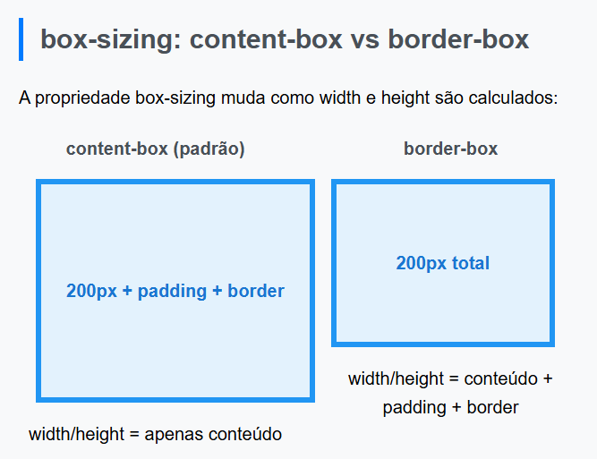
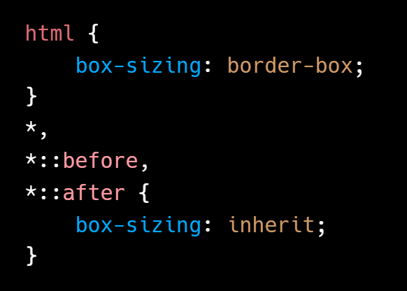

O Modelo de Caixa (Box Model) descreve como os elementos HTML são renderizados como caixas retangulares, e como o espaço é ocupado e distribuído ao redor e dentro desses elementos.
Cada elemento HTML é tratado como uma caixa:

Essa caixa é composta por quatro partes principais, que se aninham uma dentro da outra:
Conteúdo (Content): A área onde o conteúdo real do elemento é exibido (texto, imagens, vídeos, etc.). Suas dimensões são controladas pelas propriedades width e height.
Preenchimento (Padding): O espaço entre o conteúdo do elemento e sua borda. O padding empurra o conteúdo para dentro da borda, criando um espaçamento interno.
Borda (Border): A linha que envolve o padding e o conteúdo. Você pode definir a espessura, o estilo e a cor da borda.
Margem (Margin): O espaço fora da borda do elemento. A margem empurra outros elementos para longe do elemento atual, criando um espaçamento externo.
width
A propriedade width define a largura da área de conteúdo de um elemento. Pode ser especificada em unidades absolutas (px), relativas (%, em, rem, vw), ou auto.
Exemplo:
.caixa-fixa {
width: 300px;
}
.caixa-responsiva {
width: 80%;
/* 80% da largura do elemento pai */
}
height
A propriedade height define a altura da área de conteúdo de um elemento. Assim como width, pode ser especificada em unidades absolutas (px), relativas (%, em, rem, vw), ou auto.
Exemplo:
.secao-fixa {
height: 200px;
}
.secao-tela-cheia {
height: 100vh;
/* 100% da altura da viewport */
}
padding
A propriedade padding define o espaço entre o conteúdo de um elemento e sua borda. Você pode definir o padding para todos os lados de uma vez, ou individualmente para cada lado (top, right, bottom, left).
Exemplo:
.elemento {
padding: 20px;
/* 20px em todos os lados */
}
.elemento-especifico {
padding-top: 10px;
padding-right: 15px;
padding-bottom: 20px;
padding-left: 5px;
}
No primeiro exemplo, o primeiro valor 10px é o padding superior, o segundo 20px é o direito, o terceiro 30px é o inferior e o quarto 40px é o esquerdo.
No exemplo shorthand-2, o primeiro valor será aplicado ao topo e ao fundo, e o segundo à esquerda e à direita.
margin
A propriedade margin define o espaço externo de um elemento, empurrando outros elementos para longe. Assim como o padding, você pode definir a margem para todos os lados ou individualmente.
Exemplo:
.elemento {
margin: 30px;
/* 30px em todos os lados */
}
.elemento-especifico {
margin-top: 10px;
margin-right: auto;
margin-bottom: 20px;
margin-left: auto;
/* margin: 0 auto; centraliza horizontalmente */
}
O primeiro valor 2px define a largura da borda, o segundo solid define o estilo (pode ser dashed, dotted, etc.), e o terceiro black define a cor da borda.
box-sizing
A propriedade box-sizing é crucial para controlar como width e height são calculados em relação ao Box Model. Ela tem dois valores principais:

content-box (Padrão)
No modelo content-box, width e height se referem apenas às dimensões da área de conteúdo. O padding e a borda são adicionados além dessas dimensões. Isso significa que a largura e altura totais do elemento serão width + padding-left + padding-right + border-left + border-right e height + padding-top + padding-bottom + border-top + border-bottom.
Neste caso, a largura total da caixa será 100px (conteúdo) + 10px (padding esquerdo) + 10px (padding direito) + 5px (borda esquerda) + 5px (borda direita) = 130px.
border-box
No modelo border-box, width e height incluem o padding e a borda. O conteúdo é que se ajusta para caber dentro dessas dimensões. Este modelo é geralmente preferido, pois torna o layout mais intuitivo e previsível, especialmente ao trabalhar com porcentagens e sistemas de grid.
Neste caso, a largura total da caixa será 100px. O padding de 10px e a borda de 5px serão incluídos dentro desses 100px, e a área de conteúdo será reduzida para acomodá-los.
É uma prática comum aplicar box-sizing: border-box; globalmente em seus projetos CSS para simplificar o cálculo de layouts.

Colapso de Margens
Isso ocorre quando as margens verticais de dois ou mais elementos adjacentes (ou de um elemento pai e seu primeiro/último filho) se sobrepõem, e a margem resultante é a maior das margens colapsadas, e não a soma delas.
Exemplo: Se você tem dois parágrafos, um com margin-bottom: 20px; e o outro com margin-top: 30px;, o espaço vertical entre eles será de 30px (a maior margem), e não 50px.
Usar padding ou border entre os elementos.
Usar overflow: hidden; no elemento pai.
Usar display: flex; ou display: grid; no elemento pai (Flexbox e Grid lidam com espaçamento de forma diferente).